Afficher le code
library(tidyverse)
library(stringi)
library(ade4)
library(ggplot2)
library(ggrepel)
library(cluster)
library(TraMineR)
library(WeightedCluster)
library(GGally)
library(mclust)
library(purrr)
library(tibble)
library(gt)library(tidyverse)
library(stringi)
library(ade4)
library(ggplot2)
library(ggrepel)
library(cluster)
library(TraMineR)
library(WeightedCluster)
library(GGally)
library(mclust)
library(purrr)
library(tibble)
library(gt)J’ai découvert R au deuxième semestre de l’année 2022-2023 à l’occasion du cours de « Visualisation des données à l’aide du logiciel R » de Baptiste Coulmont à l’ENS Paris-Saclay, ce qui équivaut à un niveau L3. En Master 1 Sociologie Quantitative et Démographie, l’année suivante, toutes les méthodes statistiques présentées en cours étaient illustrées sur R, afin que les étudiants gagnent en autonomie sur le logiciel. De plus, j’ai effectué un stage au CREST à partir du mois de janvier 2024, auprès de Léa Pessin, avec pour objectif d’actualiser un travail de recherche avec de nouvelles vagues de données et traduire, si le terme est bien choisi, le code de Stata vers R. Le mémoire constitue donc le premier travail en autonomie, d’envergure, en utilisant R, qui plus est avec mes propres données.
La collecte de données par questionnaire s’accompagne nécessairement d’un travail de nettoyage et de traitement important afin de prendre connaissance de la base de données et relever, d’un côté, les erreurs de saisie et, de l’autre, les situations sociales qui ne rentrent pas dans la catégorisation proposée, et cela même si une phase de test du questionnaire a été réalisée au début pour ajuster certaines questions.
Le bloc de code suivant permet de charger le jeu de données, que j’ai mis en accès public après suppression des données sensibles, de manière à ce que les librairies ne soient pas identifiables. J’en profite pour donner des noms à mes variables et filtrer sur ma population d’intérêt, c’est-à-dire les librairies généralistes (306/337).
doc_quest <- read.csv2(
"https://minio.lab.sspcloud.fr/juleslapeuf/donnees_librairies_reproductibles.csv",
fileEncoding = "UTF-8",
check.names = FALSE
)
donnees_preparees <- doc_quest %>%
rename(
sal_tpl = "Combien y a-t-il d’employés à temps plein ? (en chiffre)",
sal_tpa = "Combien y a-t-il d’employés à temps partiel ? (en chiffre)",
taille = "Quelle est la surface commerciale de votre librairie ? (en m²)",
ca = "Quel était le chiffre d’affaires de la librairie l’année dernière ? (en euro)",
type = "Votre librairie est-elle... ?",
une_fois = "Lesquels de ces outils utilisez-vous au moins 1 fois par semaine ?",
jamais = "Lesquels de ces outils n'avez-vous jamais utilisé au travail ?",
chiffre_pre = "Au moment où vous répondez à ce questionnaire, avez-vous en tête un chiffre précis de... ?",
inq_av = "Sur une échelle de 1 à 10, avant la pandémie, étiez-vous inquiet pour l’avenir de votre commerce ?",
inq_p = "Sur une échelle de 1 à 10, en plein cœur de la pandémie (avril 2020), étiez-vous inquiet pour l’avenir de votre commerce ?",
inq_ap = "Sur une échelle de 1 à 10, êtes-vous inquiet pour l’avenir de votre commerce ?",
inq_source = "Quelle est votre principale source d’inquiétude ?",
outils_inf = "Avez-vous recours plus souvent à des outils informatiques et/ou numériques depuis la fin de la pandémie ?",
logspe_panne = "Votre librairie pourrait-elle fonctionner comme d’habitude si votre logiciel spécialisé tombait en panne ?",
diff_eco = "Rencontrez-vous des difficultés économiques ?"
) %>%
select(2:16)
donnees_preparees <- donnees_preparees %>%
filter(type == "Généraliste")#Taille
donnees_preparees <- donnees_preparees %>%
mutate(taille_reco = as.numeric(sub("\\D*(\\d+).*", "\\1", taille)))La surface du magasin n’est pas difficile à recoder, car il suffit d’enlever les éventuels m2 qui s’étaient glissés pendant le remplissage. Le gros du travail réside dans les colonnes sal_tpl et sal_tpa, en particulier pour ne pas compter les gérant.es comme des salariés et pour compter les alternant.es et apprenti.es comme des salariés à temps partiel. Ainsi, les réponses obtenues ne sont pas que des valeurs numériques, mais j’essaye d’en assigner une dès qu’une information le permet. Par exemple, pour la réponse 0.85, j’assigne la valeur 0 à sal_tpl et la valeur +1 à sal_tpa, car je suppose qu’il s’agit d’une personne qui travaille 85% du temps.
unique(donnees_preparees$sal_tpl) [1] "6" "9" "2"
[4] "1" "3" ""
[7] "4" "8" "3 salariés + 1 gérante"
[10] "7" "10" "3 (dont 2 alternants)"
[13] "0" "26" "2 gérents non salaries"
[16] "5" "3,8" "1,5"
[19] "20" "11" "17"
[22] "1.5" "12" "2 et 2 co gérantes"
[25] "1 salariée à 35h." "1+1" "1 + gérante"
[28] "0.85" Parfois, les répondant.es ont laissé des cases vides pour sal_tpa, et dès lors que le reste du questionnaire était rempli, j’ai assigné la valeur 0, supposant que les répondant.es n’ayant aucun salarié à temps partiel font une équivalence entre laisser la case vide et indiquer 0.
unique(donnees_preparees$sal_tpa) [1] "" "1" "5"
[4] "0" "3" "2"
[7] "4" "10" "1 (fin d'année)"
[10] "0,5" "1 salarié à 30 h" "1 alternante"
[13] "1 + une apprentie"#SALARIES
donnees_preparees[1, 2] <- "0"
donnees_preparees[18, 2] <- "0"
donnees_preparees[21, 1] <- "1"
donnees_preparees[21, 2] <- "2"
donnees_preparees[40, 1] <- "0"
donnees_preparees[51, 2] <- "1"
donnees_preparees[54, 2] <- "0"
donnees_preparees[79, 1] <- "0"
donnees_preparees[83, 2] <- "0"
donnees_preparees[103, 2] <- "0"
donnees_preparees[132, 2] <- "0"
donnees_preparees[139, 2] <- "0"
donnees_preparees[162, 2] <- "0"
donnees_preparees[194, 2] <- "0"
donnees_preparees[226, 2] <- "0"
donnees_preparees[248, 2] <- "2"
donnees_preparees[272, 2] <- "1"
donnees_preparees[272, 1] <- "0"
donnees_preparees[300, 2] <- "0"
#Nombre de salariés à temps plein
donnees_preparees$sal_tpl_rec <- donnees_preparees$sal_tpl %>%
as.factor() %>%
fct_recode(
"1" = "1 + gérante",
"1" = "1 salariée à 35h.",
"1" = "1,5",
"1" = "1.5",
"1" = "1+1",
"2" = "2 et 2 co gérantes",
"0" = "2 gérents non salaries",
"3" = "3 salariés + 1 gérante",
"3" = "3,8"
) %>%
as.character() %>%
as.numeric()
#Nombre de salariés à temps partiel
donnees_preparees$sal_tpa_rec <- donnees_preparees$sal_tpa %>%
as.factor() %>%
fct_recode(
"1" = "0,5",
"1" = "1 (fin d'année)",
"2" = "1 + une apprentie",
"1" = "1 alternante",
"1" = "1 salarié à 30 h"
) %>%
as.character() %>%
as.numeric()
#Somme = Nombre total de salariés
donnees_preparees <- donnees_preparees %>%
mutate(nb_salaries = sal_tpl_rec + sal_tpa_rec)Pour le chiffre d’affaires, il est souvent affaire d’espaces entre les centaines, de symboles d’unité monétaire ou de commentaires pour indiquer l’intervalle de temps ou la rondeur du chiffre. J’assigne une valeur car j’ai obtenu l’information à l’oral d’un libraire qui ne voulait pas l’écrire dans le questionnaire. Une fois les règles appliquées, je vérifie à la main tous les recodages pour être certain de n’avoir fait aucune erreur.
donnees_preparees[304, 7] <- "200000"
#Chiffre d'affaires
donnees_preparees <- donnees_preparees %>%
mutate(
ca_brut = str_to_lower(str_trim(ca)),
ca_rec = case_when(
# Réponses non exploitables
ca_brut %in% c(
"", "0", "warf warf warf",
"etablissement moyen",
"je ne sais plus",
"1ere année",
"pas encore fait une année complète",
"entre 07/23 et 03/24 : 285 000",
"75000€ ttc (de aôut à décembre)"
) ~ NA_real_,
# Valeurs exprimées en millions
ca_brut %in% c("1,1") ~ 1100000,
ca_brut == "1,2 millions euros" ~ 1200000,
ca_brut == "1,3 m €" ~ 1300000,
ca_brut %in% c("2 m", "2 millions") ~ 2000000,
ca_brut == "environs 2 000 000 €" ~ 2000000,
# Valeurs exprimées en milliers
ca_brut == "160 k€" ~ 160000,
ca_brut == "1923k€" ~ 1923000,
ca_brut == "197k€" ~ 197000,
ca_brut == "870 k€" ~ 870000,
ca_brut == "555 k€ ttc" ~ 555000,
# Valeurs particulières
ca_brut == "65" ~ 65000,
ca_brut == "150" ~ 150000,
ca_brut == "270" ~ 270000,
ca_brut == "170.000.00" ~ 170000,
ca_brut == "pas encore de bilan comptable terminé mais 165 000" ~ 165000,
ca_brut == "environ 205 000 euros" ~ 205000,
ca_brut == "plus de 500 000 €" ~ 500000,
ca_brut == "superieur 4 millions" ~ 4000000,
# Valeurs avec des séparateurs de milliers
TRUE ~ {
x <- ca_brut
# Supprimer les espaces classiques et insécables
x <- str_remove_all(x, "[[:space:]\u00A0\u202F]")
# Supprimer les mentions textuelles et monétaires
x <- str_remove_all(
x,
regex("€|euros?|ttc|ht|prévi|\\(prévi\\)", ignore_case = TRUE)
)
# Supprimer les points utilisés comme séparateurs de milliers
x <- str_replace_all(x, "(?<=\\d)\\.(?=\\d{3}(\\D|$))", "")
# Convertir la virgule décimale en point
x <- str_replace(x, ",", ".")
# Extraire le nombre
suppressWarnings(as.numeric(str_extract(x, "[0-9]+\\.?[0-9]*")))
}
)
) %>%
select(-ca_brut)Enfin, les dernières variables sont faciles à recoder.
#Variables sur les pratiques numériques
donnees_preparees <- donnees_preparees %>%
mutate(logspec = case_when(
str_detect(une_fois, "Logiciel") ~ 1,
str_detect(jamais, "Logiciel") ~ 0,
TRUE ~ 0
),
ressoc = case_when(
str_detect(une_fois, "Instagram") ~ 1,
str_detect(jamais, "Instagram") ~ 0,
TRUE ~ 0
),
ressocspe = case_when(
str_detect(une_fois, "Babelio") ~ 1,
str_detect(jamais, "Babelio") ~ 0,
TRUE ~ 0
),
bibnum = case_when(
str_detect(une_fois, "Electre") ~ 1,
str_detect(jamais, "Electre") ~ 0,
TRUE ~ 0
),
obslib = case_when(
str_detect(une_fois, "Verso") ~ 1,
str_detect(jamais, "Verso") ~ 0,
TRUE ~ 0
),
maillist = case_when(
str_detect(une_fois, "Mailing") ~ 1,
str_detect(jamais, "Mailing") ~ 0,
TRUE ~ 0
),
portasso = case_when(
str_detect(une_fois, "associatif") ~ 1,
str_detect(jamais, "associatif") ~ 0,
TRUE ~ 0
),
sitven = case_when(
str_detect(une_fois, "Propre") ~ 1,
str_detect(jamais, "Propre") ~ 0,
TRUE ~ 0
),
IA = case_when(
str_detect(une_fois, "artificielle") ~ 1,
str_detect(jamais, "artificielle") ~ 0,
TRUE ~ 0
),
gpdiscu = case_when(
str_detect(une_fois, "Discord") ~ 1,
str_detect(jamais, "Discord") ~ 0,
TRUE ~ 0
),
liseuse = case_when(
str_detect(une_fois, "Liseuse") ~ 1,
str_detect(jamais, "Liseuse") ~ 0,
TRUE ~ 0
),
etiq = case_when(
str_detect(une_fois, "queteuse") ~ 1,
str_detect(jamais, "queteuse") ~ 0,
TRUE ~ 0
))
#Variables sur les indicateurs comptables
donnees_preparees <- donnees_preparees %>%
mutate(taux_retour = case_when(
str_detect(chiffre_pre, "retour") ~ 1,
TRUE ~ 0
),
pass_cais = case_when(
str_detect(chiffre_pre, "passages") ~ 1,
TRUE ~ 0
),
ca_semaine = case_when(
str_detect(chiffre_pre, "chiffre") ~ 1,
TRUE ~ 0
),
remise = case_when(
str_detect(chiffre_pre, "pourcentage") ~ 1,
TRUE ~ 0
),
panier_moy = case_when(
str_detect(chiffre_pre, "panier") ~ 1,
TRUE ~ 0
),
age_stock = case_when(
str_detect(chiffre_pre, "âge") ~ 1,
TRUE ~ 0
),
taux_rotation = case_when(
str_detect(chiffre_pre, "rotation") ~ 1,
TRUE ~ 0
),
compte_banq = case_when(
str_detect(chiffre_pre, "somme") ~ 1,
TRUE ~ 0
),
renta_m2 = case_when(
str_detect(chiffre_pre, "rentabilité") ~ 1,
TRUE ~ 0
),
fonds_roule = case_when(
str_detect(chiffre_pre, "besoin") ~ 1,
TRUE ~ 0
)
)
donnees_preparees[142, 15] <- NA_character_ # Pour la colonne diff_eco
#Difficultés économiques éprouvées
donnees_preparees$diff_eco_rec <- donnees_preparees$diff_eco %>%
as.factor() %>%
fct_recode(
"1" = "Non",
"0" = "Oui"
) %>%
as.numeric()Après le recodage des variables, je réalise des catégorisations des variables suivantes : ca, nb_salaries, taille.
###CATEGORISATION
#CA
donnees_preparees <- donnees_preparees %>%
mutate(
ca_rec_rec = case_when(
ca_rec < 300000 ~ "Inférieur à 300k",
ca_rec < 600000 & ca_rec >= 300000 ~ "300k à 599k",
ca_rec < 1200000 & ca_rec >= 600000 ~ "600k à 1199k",
ca_rec >= 1200000 ~ "1,2 M€ et plus",
TRUE ~ NA_character_
),
ca_rec_rec = factor(ca_rec_rec)
) %>%
mutate(
ca_rec_rec = fct_relevel(
ca_rec_rec,
"Inférieur à 300k",
"300k à 599k",
"600k à 1199k",
"1,2 M€ et plus"
)
)
#SALARIES
donnees_preparees <- donnees_preparees %>%
mutate(
nb_salaries_ = case_when(
nb_salaries == 0 ~ "Aucun salarié",
nb_salaries >= 1 & nb_salaries <= 2 ~ "1 à 2 salariés",
nb_salaries >= 3 & nb_salaries <= 4 ~ "3 à 4 salariés",
nb_salaries >= 5 & nb_salaries <= 9 ~ "5 à 9 salariés",
nb_salaries >= 10 ~ "10 et plus",
TRUE ~ NA_character_
),
nb_salaries_ = factor(
nb_salaries_,
levels = c(
"Aucun salarié",
"1 à 2 salariés",
"3 à 4 salariés",
"5 à 9 salariés",
"10 et plus"
)
)
)
#TAILLE
donnees_preparees <- donnees_preparees %>%
mutate(surfco_ = case_when(
taille_reco > 199 ~ "Plus de 200 m2",
taille_reco <= 199 & taille_reco > 99 ~ "Entre 100 et 199 m2",
taille_reco < 100 ~ "Moins de 100 m2",
TRUE ~ NA_character_
),
surfco_ = fct_relevel(surfco_,
"Moins de 100 m2",
"Entre 100 et 199 m2",
"Plus de 200 m2"))Cette phase de recodage des variables avait produit quelques bêtises lors de mon master 1, si bien que 7 unités statistiques s’étaient perdues, alors qu’elles auraient dû être incluses dans la suite des analyses. Il était donc primordial de reprendre le code pour poser un regard critique, plus de 3 ans après, sur mon premier travail de recherche, et cela montre par la même occasion que mon regard s’est aiguisé tant dans la maîtrise des outils que dans la recherche d’une démarche plus honnête et rigoureuse. Néanmoins, le jeu de données ayant changé, il convient de conduire à nouveau les analyses pour voir si cela a pu avoir un réel effet sur les résultats présentés dans le mémoire.
L’ACM est réalisée avec le package ade4.
d <- donnees_preparees %>%
select(
etiq, liseuse, gpdiscu, sitven, portasso,
maillist, obslib, bibnum, ressoc, ressocspe,
logspec, surfco_, nb_salaries_, ca_rec_rec,
taux_retour, pass_cais, ca_semaine, remise,
panier_moy, age_stock, taux_rotation,
compte_banq, renta_m2, fonds_roule
) %>%
mutate(across(-c(surfco_, nb_salaries_, ca_rec_rec), as.factor)) %>%
mutate(
surfco_ = ordered(surfco_, levels = c(
"Moins de 100 m2",
"Entre 100 et 199 m2",
"Plus de 200 m2"
)),
nb_salaries_ = ordered(nb_salaries_, levels = c(
"Aucun salarié",
"1 à 2 salariés",
"3 à 4 salariés",
"5 à 9 salariés",
"10 et plus"
)),
ca_rec_rec = ordered(ca_rec_rec, levels = c(
"Inférieur à 300k",
"300k à 599k",
"600k à 1199k",
"1,2 M€ et plus"
))
) %>%
na.omit()acm <- dudi.acm(df = d, scannf = FALSE, nf = 5)# Pourcentages d'inertie expliquée
inertie <- acm$eig / sum(acm$eig) * 100
# Histogramme
barres <- barplot(
inertie,
names.arg = seq_along(inertie),
col = "royalblue",
border = "black",
main = "Histogramme des valeurs propres",
ylab = "Pourcentage de l'inertie expliquée",
xlab = "Axes factoriels"
)
# Courbe reliant les valeurs
lines(
x = barres,
y = inertie,
type = "b",
col = "red",
lwd = 2,
pch = 19
)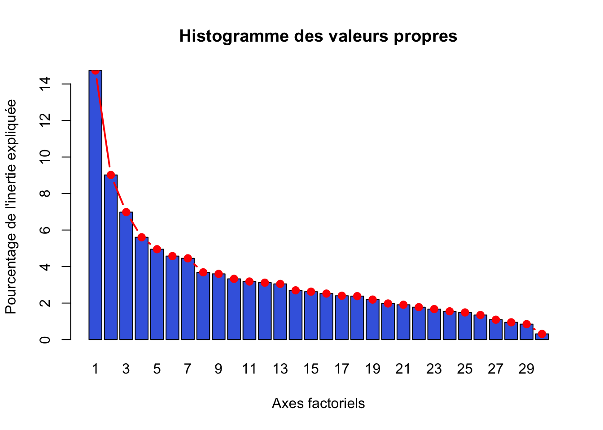
# Cercle de corrélations
s.corcircle(acm$co, 1, 2, clabel = 0.5)
# Fonction pour représenter les contributions
graph_contrib <- function(acm, axe) {
# Calcul des contributions des modalités
contrib_modalites <- acm$cw * acm$co[, axe]^2 / acm$eig[axe] * 100
# Classement décroissant
contrib_modalites <- sort(contrib_modalites, decreasing = TRUE)
# Marges du graphique
par(mar = c(12, 4, 4, 2))
# Histogramme
barplot(
contrib_modalites,
names.arg = names(contrib_modalites),
las = 2,
col = "royalblue",
border = "black",
main = paste("Contributions des modalités à la dimension", axe),
ylab = "Contribution (%)",
cex.names = 0.5,
space = 0.2
)
# Seuil moyen de contribution
abline(
h = 100 / length(contrib_modalites),
col = "red",
lty = 2,
lwd = 2
)
}
# Graphique de l'axe 1
graph_contrib(acm, 1)
# Graphique de l'axe 2
graph_contrib(acm, 2)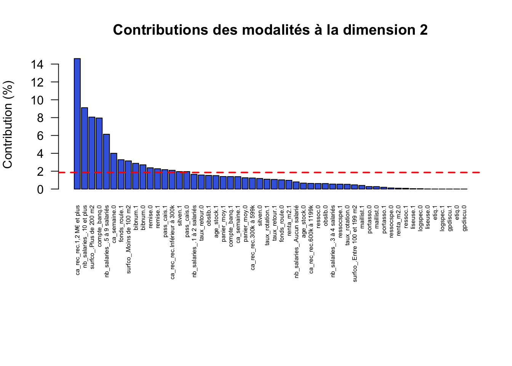
# Graphique de l'axe 3
graph_contrib(acm, 3)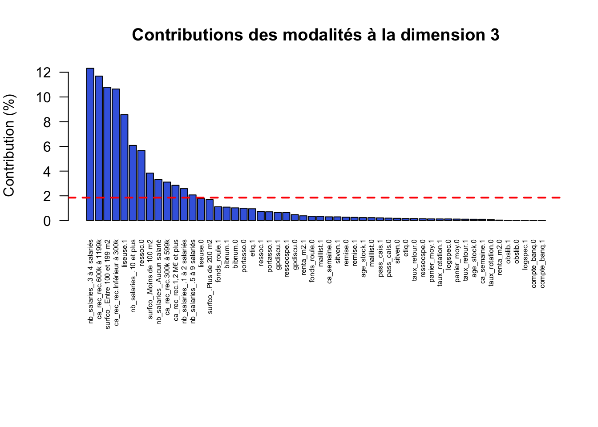
Malgré l’arrivée de 7 nouvelles unités, les contributions des modalités aux axes n’ont pas bougé par rapport aux graphiques fournis p. 102 du mémoire.
modalites <- as.data.frame(acm$co)
modalites$modalite <- rownames(modalites)
# Projection des variables
ggplot(modalites, aes(x = Comp1, y = Comp2, label = modalite)) +
geom_point(size = 1.5) +
geom_text_repel(
size = 2.5,
box.padding = 0.3,
point.padding = 0.2,
max.overlaps = Inf
) +
geom_hline(yintercept = 0, linetype = "dashed", color = "grey70") +
geom_vline(xintercept = 0, linetype = "dashed", color = "grey70") +
labs(
title = "Nuage des modalités – ACM - Dimensions 1 et 2",
x = "Dimension 1",
y = "Dimension 2"
) +
theme_minimal()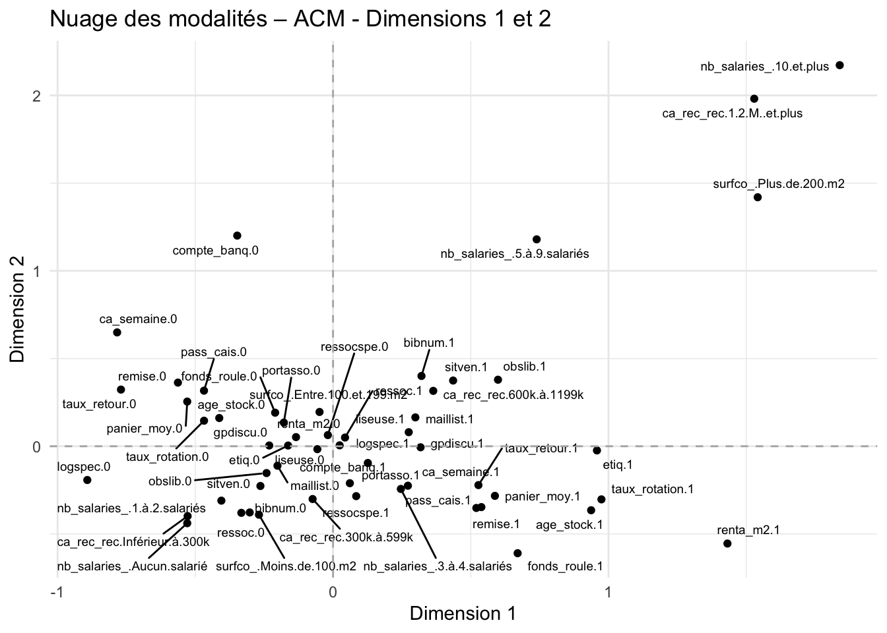
ggplot(modalites, aes(x = Comp1, y = Comp3, label = modalite)) +
geom_point(size = 1.5) +
geom_text_repel(
size = 2.5,
box.padding = 0.3,
point.padding = 0.2,
max.overlaps = Inf
) +
geom_hline(yintercept = 0, linetype = "dashed", color = "grey70") +
geom_vline(xintercept = 0, linetype = "dashed", color = "grey70") +
labs(
title = "Nuage des modalités – ACM - Dimensions 1 et 3",
x = "Dimension 1",
y = "Dimension 3"
) +
theme_minimal()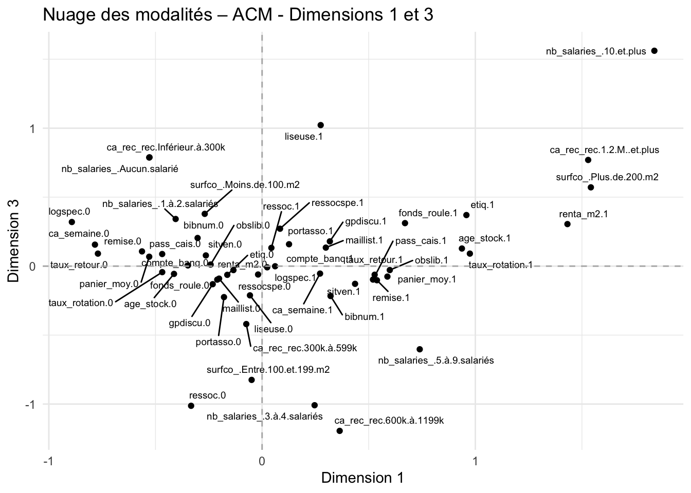
De la même manière, l’espace des modalités n’a pas bougé, ce qui maintient les interprétations et conclusions réalisées dans le mémoire. En effet, les pratiques des libraires sont homogènes tant dans l’utilisation des outils numériques et informatiques que dans la connaissance des indicateurs comptables propres à leur profession, néanmoins les écarts à cette norme sont classants, comme le fait de ne pas connaître le montant sur son compte en banque, ou à l’inverse de connaître sa rentabilité au mètre carré.
individus <- as.data.frame(acm$li)
individus$individu <- rownames(individus)
# Projection des individus
ggplot(individus, aes(x = Axis1, y = Axis2)) +
geom_point(size = 1.5, alpha = 0.6) +
geom_hline(yintercept = 0, linetype = "dashed", color = "grey70") +
geom_vline(xintercept = 0, linetype = "dashed", color = "grey70") +
labs(
title = "Nuage des individus – ACM - Dimensions 1 et 2",
x = "Dimension 1",
y = "Dimension 2"
) +
theme_minimal()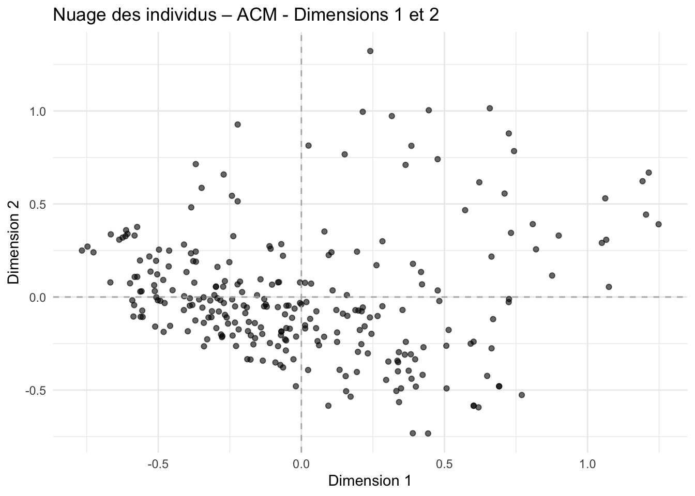
ggplot(individus, aes(x = Axis1, y = Axis3)) +
geom_point(size = 1.5, alpha = 0.6) +
geom_hline(yintercept = 0, linetype = "dashed", color = "grey70") +
geom_vline(xintercept = 0, linetype = "dashed", color = "grey70") +
labs(
title = "Nuage des individus – ACM - Dimensions 1 et 3",
x = "Dimension 1",
y = "Dimension 2"
) +
theme_minimal()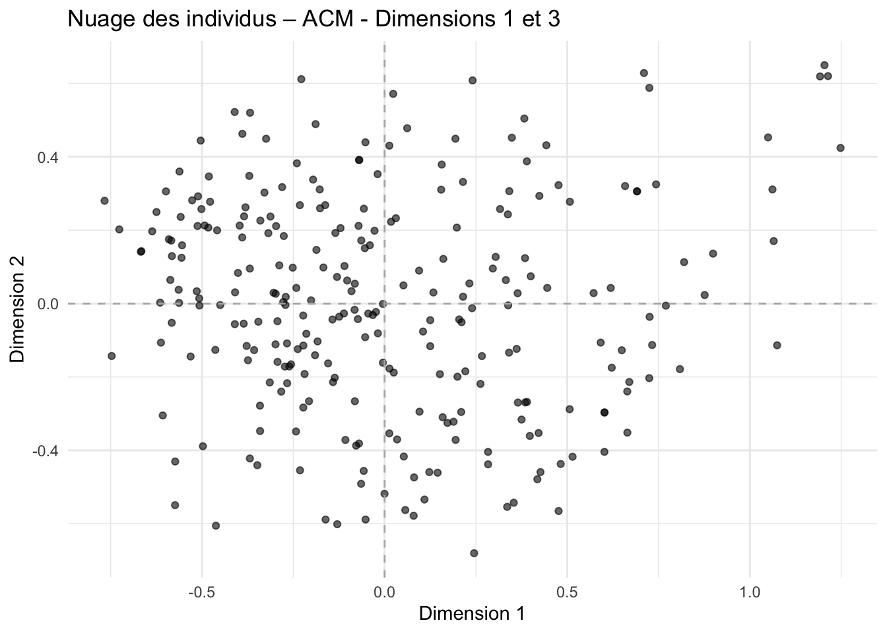
Dans cette sous-partie, je reprends l’analyse qui constitue le coeur du chapitre 5 et se fonde sur une CAH. Premier problème : dans le mémoire, j’écris que j’utilise “la méthode de Ward”, ce qui ne veut rien dire sans préciser ni la nature des variables ni la distance choisie. Deuxième problème : dans le code, je calcule la cah avec la distance euclidienne, mais la nature des variables, à savoir 21 binaires et 3 catégorielles, rend impossible son utilisation et la fonction bascule sur la distance de Gower, comme il était indiqué dans un Warning message.
La CAH permet notamment de projeter les classes construites sur l’espace de l’ACM.
Ainsi, avec l’appui du guide-R de Joseph Larmarange (https://larmarange.github.io/guide-R/analyses_avancees/classification-ascendante-hierarchique.html), je présente trois méthodes de classification différentes : - 1) distance phi2 et méthode de Ward au carré des distances (Ward.D2) - 2) distance de Gower et méthode average - 3) distance euclidienne et méthode Ward.D2
Cette méthode utilise les distances calculées lors de l’ACM et construit le dendrogramme à l’aide de la méthode de Ward sur le carré des distances.
distance_phi2 <- ade4::dist.dudi(acm)
arbre_phi2 <- hclust(
distance_phi2,
method = "ward.D2"
)
plot(
arbre_phi2,
labels = FALSE,
main = "CAH – Distance du Phi²",
xlab = "",
sub = "",
hang = -1
)
rect.hclust(
arbre_phi2,
k = 3,
border = c("red", "blue", "green")
)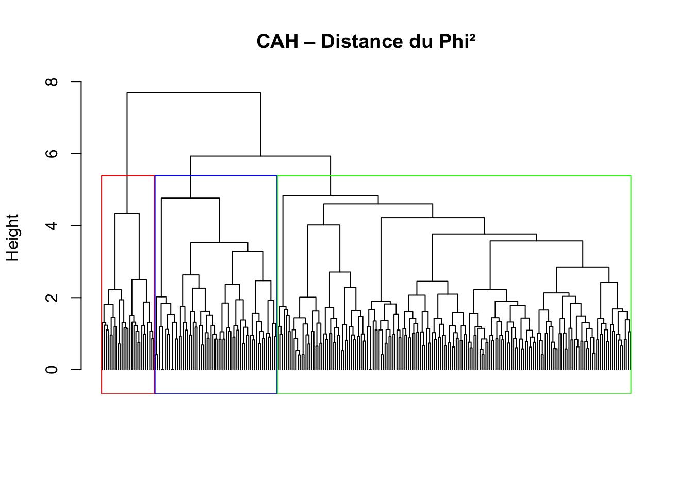
inertie_phi2 <- sort(arbre_phi2$height, decreasing = TRUE)
plot(inertie_phi2[1:20], type = "s", xlab = "Nombre de classes", ylab = "Inertie")
points(c(2, 3, 5), inertie_phi2[c(2, 3, 5)], col = c("green3", "red3", "blue3"), cex = 2, lwd = 3)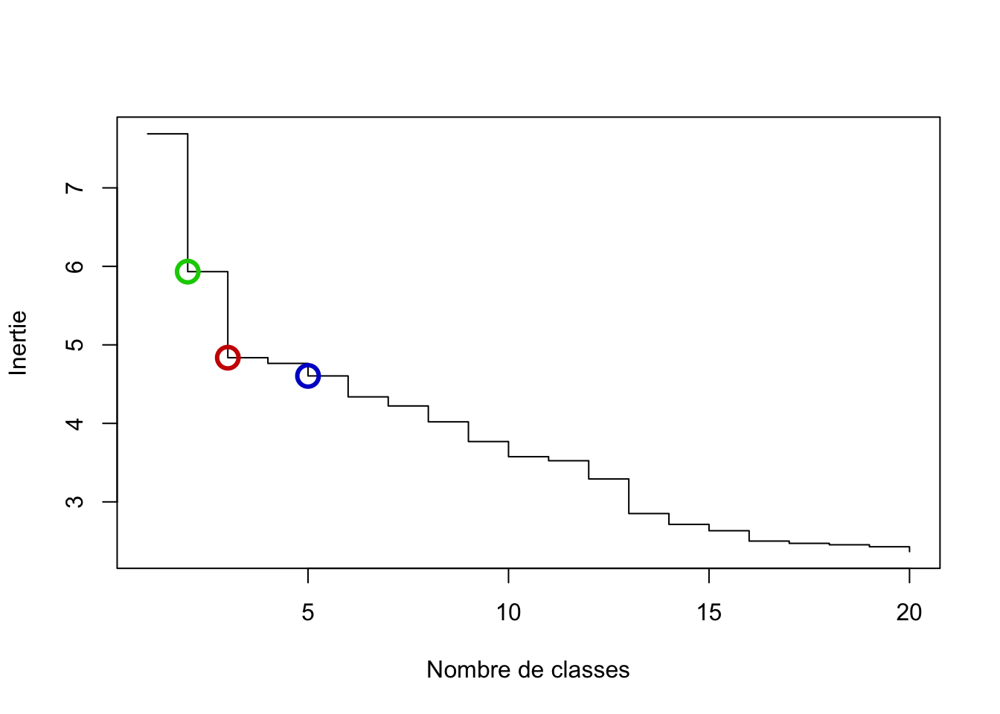
wardRange_phi2 <- as.clustrange(arbre_phi2, diss = distance_phi2, ncluster = 15)
plot(wardRange_phi2,
stat = c('ASW','CH','HC','HG','PBC'),
norm = "zscore",
main = "Indicateurs de découpage des classes du dendrogramme pour phi2")
groupes_phi2 <- cutree(arbre_phi2, k = 3)
d1_phi2 <- d %>%
mutate(typo = factor(groupes_phi2))
table(d1_phi2$typo)
1 2 3
62 27 179 Les indicateurs de découpage des classes indiquent un coude assez net au niveau de k=3, et la distribution des effectifs par classe semble correcte, quoique la classe 3 regroupe beaucoup d’unités.
La distance de Gower propose de mesurer la similarité de deux unités en calculant une distance entre deux individus à partir de leurs points communs dans les variables considérées.
distance_gower <- daisy(
d,
metric = "gower"
)
arbre_gower <- hclust(
as.dist(distance_gower),
method = "average"
)
plot(
arbre_gower,
labels = FALSE,
main = "CAH – Distance de Gower",
xlab = "",
sub = "",
hang = -1
)
rect.hclust(
arbre_gower,
k = 2,
border = c("red", "blue")
)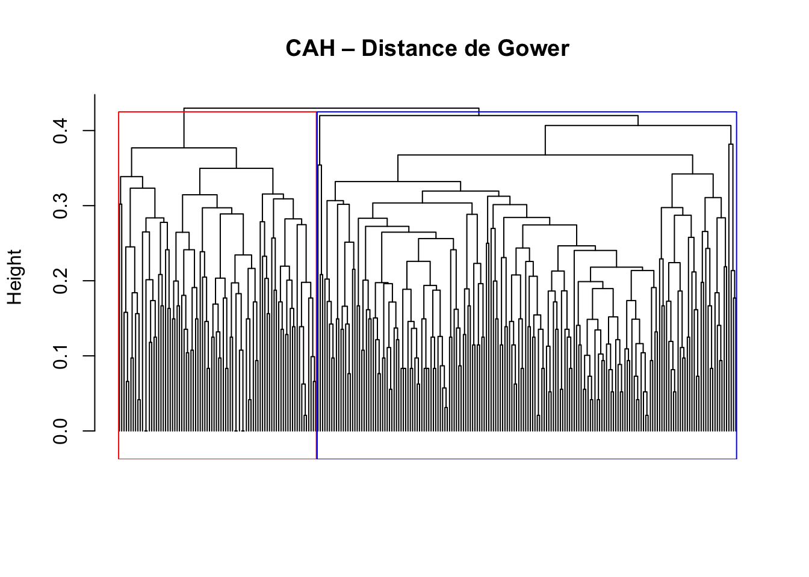
inertie_gower <- sort(arbre_gower$height, decreasing = TRUE)
plot(inertie_gower[1:20], type = "s", xlab = "Nombre de classes", ylab = "Inertie")
points(c(2, 3, 5), inertie_gower[c(2, 3, 5)], col = c("green3", "red3", "blue3"), cex = 2, lwd = 3)
wardRange_gower <- as.clustrange(arbre_gower, diss = distance_gower, ncluster = 15)
plot(wardRange_gower,
stat = c('ASW','CH','HC','HG','PBC'),
norm = "zscore",
main = "Indicateurs de découpage des classes du dendrogramme pour Gower")
groupes_gower <- cutree(arbre_gower, k = 2)
d1_gower <- d %>%
mutate(typo = factor(groupes_gower))
table(d1_gower$typo)
1 2
86 182 Pour cette classification, un découpage en k=2 classes est préférable, car les groupes sont plus fournis de cette manière.
Pour cette méthode, il faut utiliser des variables quantitatives, donc les 21 variables boléennes deviennent des variables binaires (0/1) et les 3 variables catégorielles sont incluses dans leur forme initiale, c’est-à-dire numérique. Toutes les variables sont standardisées.
# Il faut utiliser des variables quantitatives, donc on reprend les variables avant catégorisation
d_euclidean <- donnees_preparees %>%
select(
etiq, liseuse, gpdiscu, sitven, portasso,
maillist, obslib, bibnum, ressoc, ressocspe,
logspec, taille_reco, nb_salaries, ca_rec,
taux_retour, pass_cais, ca_semaine, remise,
panier_moy, age_stock, taux_rotation,
compte_banq, renta_m2, fonds_roule
) %>%
mutate(
across(
c(etiq, liseuse, gpdiscu, sitven, portasso,
maillist, obslib, bibnum, ressoc, ressocspe,
logspec, taux_retour, pass_cais, ca_semaine,
remise, panier_moy, age_stock, taux_rotation,
compte_banq, renta_m2, fonds_roule),
~ as.numeric(as.character(.))
),
across(
c(taille_reco, nb_salaries, ca_rec),
as.numeric
)
) %>%
na.omit()
# Et on standardise
d_standardise <- as.data.frame(scale(d_euclidean))
distance_euclidean <- dist(
d_standardise,
method = "euclidean"
)
arbre_euclidean <- hclust(
distance_euclidean,
method = "ward.D2"
)
plot(
arbre_euclidean,
labels = FALSE,
main = "CAH – Distance Euclidienne",
xlab = "",
sub = "",
hang = -1
)
rect.hclust(
arbre_euclidean,
k = 2,
border = c("red", "blue")
)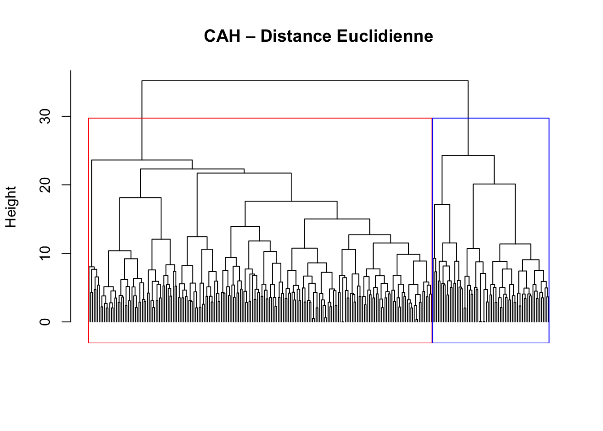
inertie_euclidean <- sort(arbre_euclidean$height, decreasing = TRUE)
plot(inertie_euclidean[1:20], type = "s", xlab = "Nombre de classes", ylab = "Inertie")
points(c(2, 3, 5), inertie_euclidean[c(2, 3, 5)], col = c("green3", "red3", "blue3"), cex = 2, lwd = 3)
wardRange_euclidean <- as.clustrange(arbre_euclidean, diss = distance_euclidean, ncluster = 15)
plot(wardRange_euclidean,
stat = c('ASW','CH','HC','HG','PBC'),
norm = "zscore",
main = "Indicateurs de découpage des classes du dendrogramme pour Euclidienne")
groupes_euclidean <- cutree(arbre_euclidean, k = 2)
d1_euclidean <- d_euclidean %>%
mutate(typo = factor(groupes_euclidean))
table(d1_euclidean$typo)
1 2
68 200 Pour cette classification, un découpage en k=2 classes est préférable, car les groupes sont plus fournis de cette manière, et on voit un coude à ce niveau-là.
Déja, les trois méthodes produisent des résultats assez différents avec plutôt 2 classes, donc il faut impérativement les comparer pour retenir la meilleure classification selon l’homogénéité intra-classe et l’hétérogénéité inter-classe, ainsi que l’interprétabilité sociologique des classes.
C’est pourquoi, je regarde la répartition des modalités pour chaque typologie afin d’identifier des profils clairs. Pour cela, on utilise le package GGally pour visualiser à l’aide du Chi2 les modalités sur (bleu) et sous-représentées (rouge) dans les classes.
afficher_ggtable <- function(df, colonnes) {
ggtable(
df,
columnsX = "typo",
columnsY = colonnes,
cells = "col.prop",
fill = "std.resid"
) +
labs(fill = "Résidus standardisés du Chi²") +
theme(legend.position = "bottom")
}
afficher_ggtable(d1_phi2, names(d1_phi2)[1:6])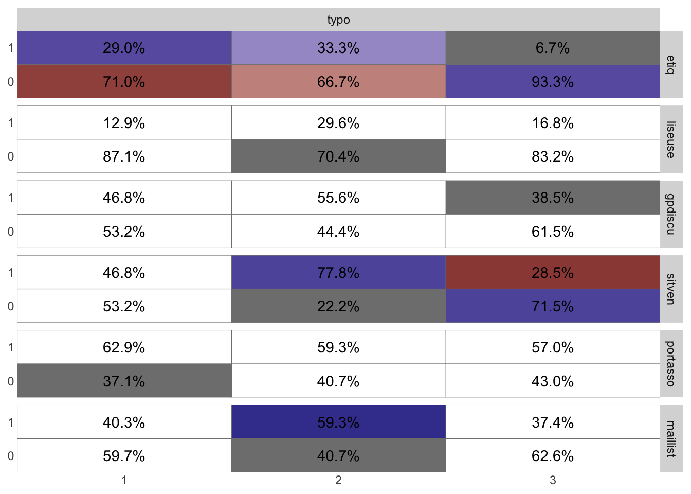
afficher_ggtable(d1_phi2, names(d1_phi2)[7:11])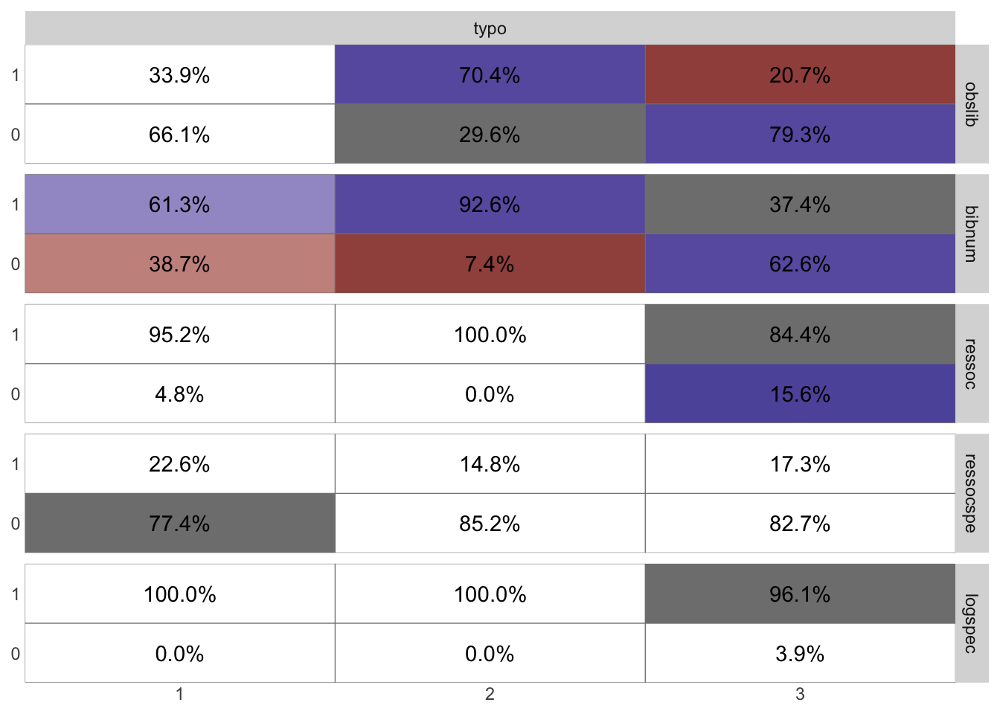
afficher_ggtable(d1_phi2, names(d1_phi2)[12:14])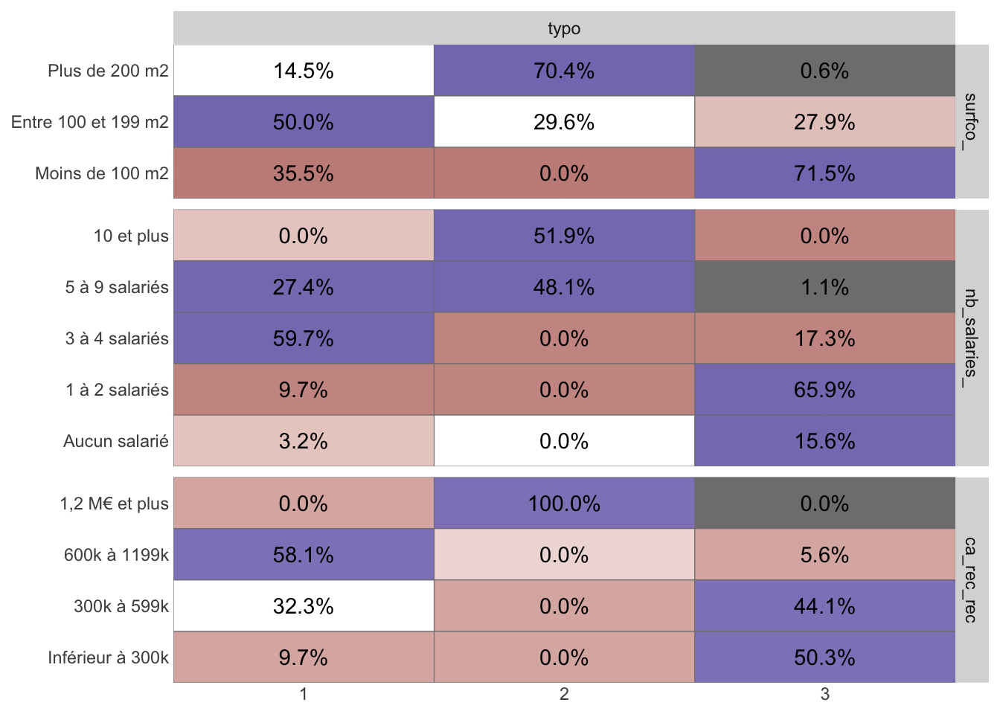
afficher_ggtable(d1_phi2, names(d1_phi2)[15:19])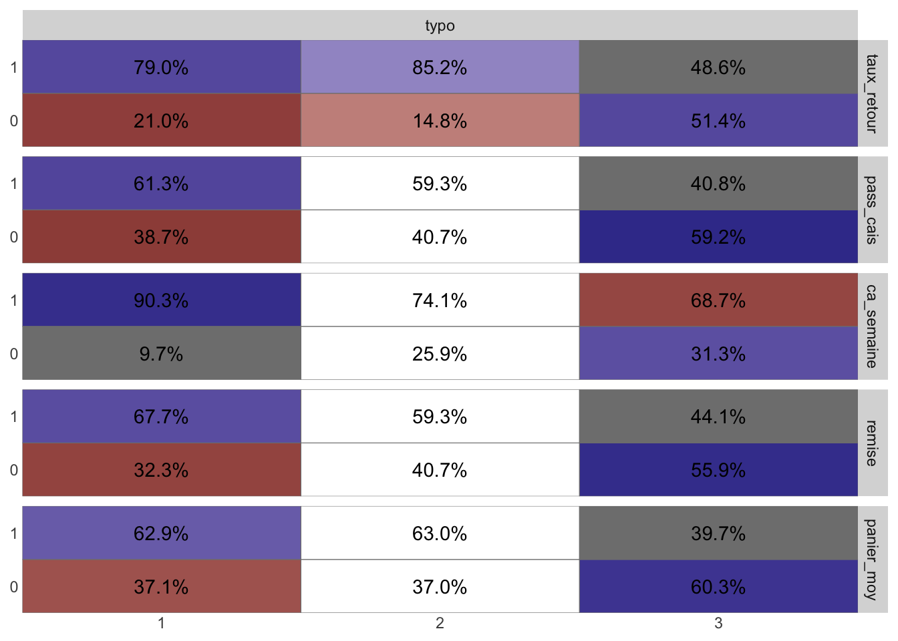
afficher_ggtable(d1_phi2, names(d1_phi2)[20:24])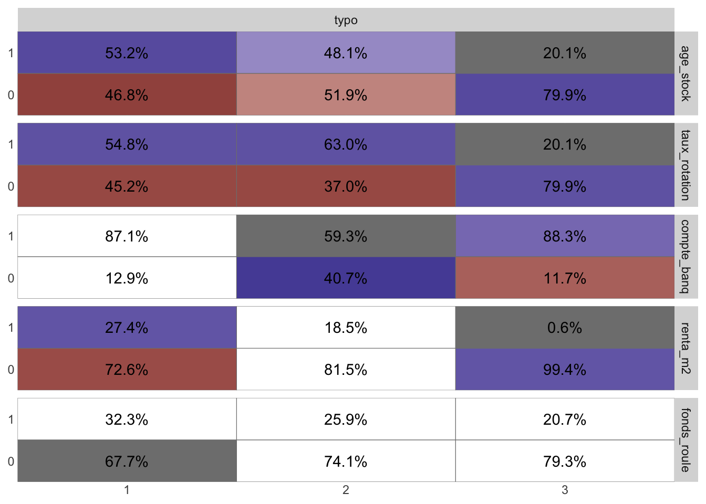
On voit tout de suite que les individus ayant un chiffre daffaires supérieur à 1,2 million d’euros sont tous regroupés dans la deuxième, ce qui est le critère déterminant de la création des classes. Ces librairies sont aussi celles avec le plus de salariés et la plus grande surface commerciale. Cela n’est pas étonnant, car ce sont les trois modalités qui contribuent le plus à la formation des axes de l’ACM et que la distance choisie ici s’appuie sur cette ACM.
afficher_ggtable(d1_gower, names(d1_gower)[1:6])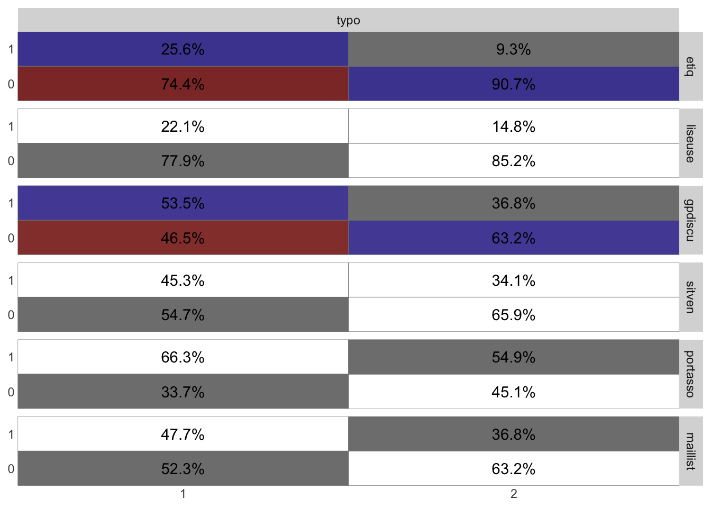
afficher_ggtable(d1_gower, names(d1_gower)[7:11])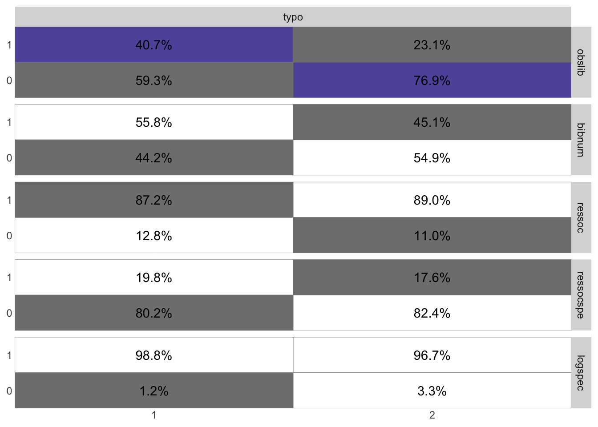
afficher_ggtable(d1_gower, names(d1_gower)[12:14])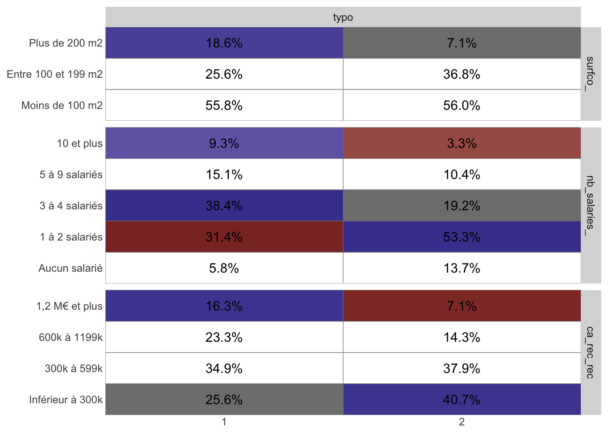
afficher_ggtable(d1_gower, names(d1_gower)[15:19])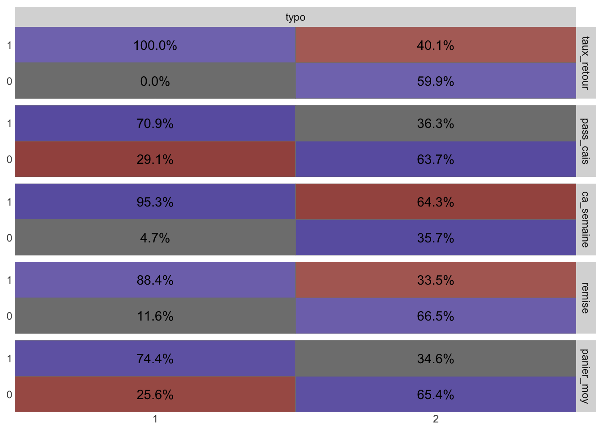
afficher_ggtable(d1_gower, names(d1_gower)[20:24])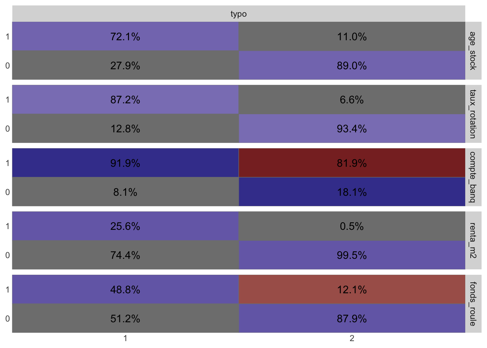
Cette deuxième typologie distingue 2 classes, et ces classes ne sont pas uniquement formées sur les variables économiques, même si la classe 1 a une surreprésentation des unités avec un gros chiffre d’affaires et et la classe 2 une sousreprésentation de ces unités. Au niveau des pratiques quotidiennes, la classe 1 a une surreprésentation de l’usage de l’étiqueteuse, des groupes de discussion entre libraires, de l’observatoire des librairies, et au niveau des indicateurs comptables, la classe 1 connaît plus souvent : le taux de retour, le nombre de passage en caisse, le chiffre d’affaires par semaine, le taux de remise et globalement les libraires qui connaissent les indicateurs comptables sont surreprésentés dans la classe 1 et inversement pour la classe 2.
Pour la dernière méthode, il faut calculer des moyennes des variables par groupe car elles sont numériques.
tester_quantitatives <- function(df) {
variables <- df %>%
select(where(is.numeric)) %>%
names()
map_dfr(variables, function(var) {
test <- kruskal.test(
as.formula(paste0("`", var, "` ~ typo")),
data = df
)
tibble(
variable = var,
statistique = round(unname(test$statistic), 2),
p_value = round(test$p.value, 4)
)
}) %>%
mutate(
significatif = p_value < 0.05
) %>%
arrange(desc(statistique))
}
resultats_tests <- tester_quantitatives(d1_euclidean)
# Variables significatives
variables_significatives <- resultats_tests %>%
filter(significatif) %>%
pull(variable)
moyennes_euclidiennes <- d1_euclidean %>%
group_by(typo) %>%
summarise(
across(
where(is.numeric),
~ round(mean(.x, na.rm = TRUE), digits = 2)
),
.groups = "drop"
)
moyennes_euclidiennes %>%
gt() %>%
tab_style(
style = list(
cell_fill(color = "#D9EAD3"),
cell_text(color = "#274E13", weight = "bold")
),
locations = cells_body(
columns = all_of(variables_significatives)
)
) %>%
tab_header(
title = "Moyennes par classe – CAH euclidienne",
subtitle = "En vert : variables présentant une différence significative entre les classes"
)| Moyennes par classe – CAH euclidienne | ||||||||||||||||||||||||
| En vert : variables présentant une différence significative entre les classes | ||||||||||||||||||||||||
| typo | etiq | liseuse | gpdiscu | sitven | portasso | maillist | obslib | bibnum | ressoc | ressocspe | logspec | taille_reco | nb_salaries | ca_rec | taux_retour | pass_cais | ca_semaine | remise | panier_moy | age_stock | taux_rotation | compte_banq | renta_m2 | fonds_roule |
|---|---|---|---|---|---|---|---|---|---|---|---|---|---|---|---|---|---|---|---|---|---|---|---|---|
| 1 | 0.28 | 0.12 | 0.54 | 0.57 | 0.75 | 0.47 | 0.56 | 0.63 | 0.96 | 0.13 | 1.00 | 184.35 | 4.99 | 862797.3 | 0.93 | 0.76 | 0.96 | 0.90 | 0.85 | 0.71 | 0.74 | 0.90 | 0.32 | 0.49 |
| 2 | 0.10 | 0.19 | 0.38 | 0.31 | 0.53 | 0.38 | 0.19 | 0.43 | 0.86 | 0.20 | 0.96 | 99.03 | 2.38 | 440334.7 | 0.48 | 0.38 | 0.67 | 0.38 | 0.35 | 0.17 | 0.18 | 0.84 | 0.00 | 0.16 |
Ces deux classes ne se différencient pas non plus sur les critères économiques uniquement, et il semblerait qu’on retrouve les distinctions de la CAH à l’aide de la distance de Gower, cependant, pour la distance euclidienne les différences sur l’utilisation des outils numériques sont aussi significatives.
Après analyse des trois classifications, il semblerait que la dernière soit la plue pertinente d’un point de vue sociologique, car elle crée deux classes : une première classe proche des outils numériques et connaisseuse des indicateurs comptables, et une deuxième classe, la plus large en termes d’effectifs, avec des pratiques plus diverses et homogènes. Ces deux classes se différencient également sur les critères économiques des magasins.
Pour affiner le choix de la CAH, on regarde la projection des classes sur l’espace des individus, pour voir visuellement selon quel axe les classes sont distribuées.
individus$classe_phi2 <- factor(groupes_phi2)
individus$classe_gower <- factor(groupes_gower)
individus$classe_euclidean <- factor(groupes_euclidean)ggplot(individus, aes(x = Axis1, y = Axis2, color = classe_phi2)) +
geom_point(size = 1.8, alpha = 0.7) +
scale_color_manual(
values = c(
"1" = "red",
"2" = "blue",
"3" = "green"
)
) +
geom_hline(yintercept = 0, linetype = "dashed", color = "grey70") +
geom_vline(xintercept = 0, linetype = "dashed", color = "grey70") +
labs(
title = "Projection des classes – CAH phi²",
x = "Dimension 1",
y = "Dimension 2",
color = "Classe"
) +
theme_minimal()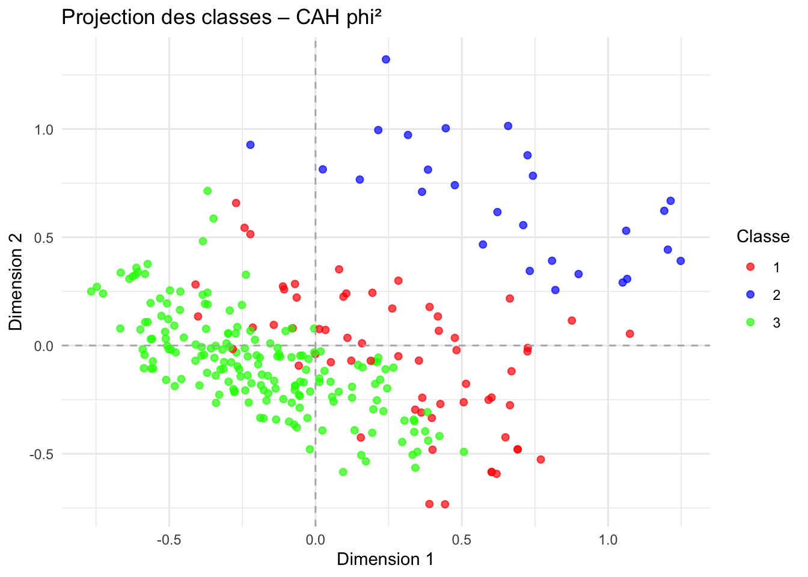
ggplot(individus, aes(x = Axis1, y = Axis2, color = classe_gower)) +
geom_point(size = 1.8, alpha = 0.7) +
scale_color_manual(
values = c(
"1" = "red",
"2" = "blue"
)
) +
geom_hline(yintercept = 0, linetype = "dashed", color = "grey70") +
geom_vline(xintercept = 0, linetype = "dashed", color = "grey70") +
labs(
title = "Projection des classes – CAH Gower",
x = "Dimension 1",
y = "Dimension 2",
color = "Classe"
) +
theme_minimal()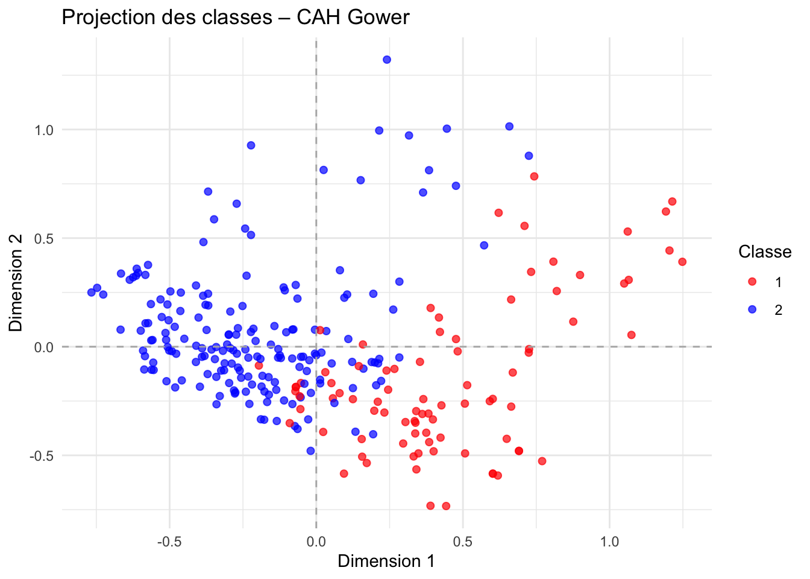
ggplot(individus, aes(x = Axis1, y = Axis2, color = classe_euclidean)) +
geom_point(size = 1.8, alpha = 0.7) +
scale_color_manual(
values = c(
"1" = "red",
"2" = "blue"
)
) +
geom_hline(yintercept = 0, linetype = "dashed", color = "grey70") +
geom_vline(xintercept = 0, linetype = "dashed", color = "grey70") +
labs(
title = "Projection des classes – CAH Euclidean",
x = "Dimension 1",
y = "Dimension 2",
color = "Classe"
) +
theme_minimal()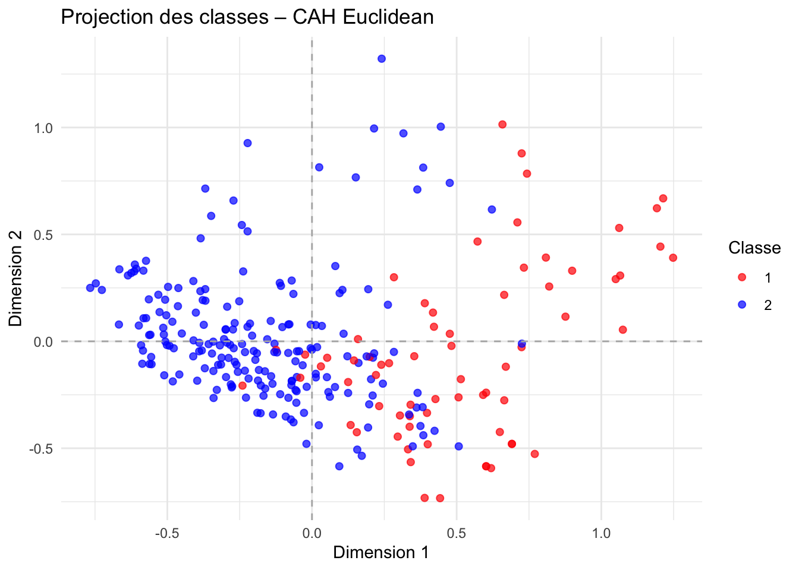
La première classification (selon la méthode phi2) oppose les classes selon les deux dimensions. On voit la classe la plus fournie regroupée au centre des axes, c’est-à-dire avec des unités statistiques qui sont homogènes dans leurs pratiques. Puis les deux classes suivantes, étendent la classe 3 vers la partie en haut à droite du graphique, c’est-à-dire vers les critères économiques.
La deuxième classification a deux classes différentes.
Finalement, on retient la classification utilisant la distance euclicienne et la méthode de Ward appliquée au carré des distances.
Cette note méthodologique a pour but de reprendre les analyses menées en 2022/2023 lors de mon mémoire de master 1 Sociologie Quantitative et Démographie. D’un côté, j’ai corrigé des erreurs dans le traitement des données et la catégorisation, qui avaient conduit à oublier des individus pour l’ACM et la CAH. D’un autre, j’ai approfondit la classification ascendante hiérarchique réalisée, pour préciser plus sérieusement la distance utilisée et la méthode d’agrégation en comparant 3 CAH différentes pour identifier la plus appropriée statistiquement et sociologiquement. Même si les résultats n’ont pas changé drastiquement, il m’a semblé primordial de réaliser ce travail afin de porter un regard critique sur mon premier travail de recherche utilisant des méthodes quantitatives.